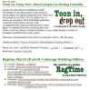
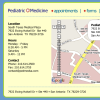
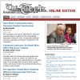
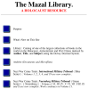
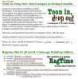

portfolio
- Projects
- 
IvyGate, the Ivy League blog, covers news, gossip, sex, sports and more at Brown, Columbia, Cornell, Dartmouth, Harvard, Penn, Princeton and Yale.
- 
Pediatric Medicine, P.A. offers comprehensive pediatric care to all children. Our providers include four fully-qualified pediatricians and a pediatric nurse practitioner.
- 
The Tech is MIT's oldest and largest newspaper & the first newspaper published the web. The Tech is published by the students of the Massachusetts Institute of Technology.
-
RSS on a Plane (RSSoaP) is a formidable new entry into the field of syndication aggregators. Features such as built in archiving, search, blog composition, article outboxes, digg-ing, and del.icio.us tagging make it possible for users follow stories as they develop.
-
Campusfood.com is the nation's leading network of restaurants, providing innovative marketing to restaurant partners and offering online menus with interactive ordering for students and local communities.
- 
The Mazal Library is a privately held and funded resource for historians, researchers, students and the general public. The library contains upwards of 20,000 books, microfilm rolls, pamphlets, and ephemera related to the Holocaust, anti-Semitism, racism and bigotry.
- 
- Design
 I designed this logo while avoiding studying for finals freshman year. I had always hoped it would become the front of a t-shirt. So far, it has been rejected by the MIT Department of Political Science and nerdyshirts.com. You could be next!
I designed this logo while avoiding studying for finals freshman year. I had always hoped it would become the front of a t-shirt. So far, it has been rejected by the MIT Department of Political Science and nerdyshirts.com. You could be next!